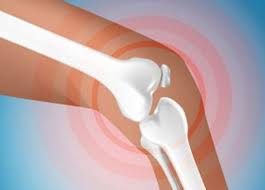

अस्थि

अस्थि श्वेत रंग का एक कठोर ऊतक है जिससे सारे कशेरुकी (रीढ़वाले) जंतुओं के शरीर का कंकाल (ढाँचा) बनता है। अस्थिशरीर के आकार का आधार है। अस्थियों द्वारा ही शरीर गति करता है तथा भीतर के मुख्य अंग सुरक्षित रहते हैं। इन्हीं के कारण हमारे दैनिक कार्य संपन्न होते हैं।
अस्थि एक परिवर्तनशील ऊतक है ओर शरीर के बहुत से रासयानिक तथा जैव परिवर्तनों से उसका संबंध है। रक्त में होनेवाले रासायनिक परिवर्तनों तथा शरीर के अन्य भागों में अंत:स्रावी और आहारजन्य कारणों से स्वयं अस्थि में रचनात्मक परिवर्तन होने लगते हैं, और अस्थि भी इन परिवर्तनों का कारण होता है। आयुपर्यंत अस्थि का पुनर्निर्माण होता रहता है तथा उसकी रचना बदलती रहती है।
शरीर की अधिकतर अस्थियाँ लंबी होती हैं। इनमें एक दो चौड़े या फूले हुए शिरों के बीच लंबा कांड (खोखला बेलन) होता है। शिरों को वर्धक प्रांत कहते हैं, क्योंकि यहीं से अस्थि की वृद्धि होती है। अस्थि पर एक अत्यंत सूक्ष्म कला चढ़ी रहती है, जिसको अस्थ्यावरण कहते हैं। कांड के भीतर एक लंबी नलिका होती है जिसके बाहर ठोस अस्थि में दो भाग होते हैं। नलिका की ओर सुषिर भाग रहता है जो सछिद्र होता है। उसके बाहर संहत भाग होता है जो घना और ठोस होता है। बीच की नलिका में अस्थिमज्जा भरी रहती है। यहीं रक्त बनता है। अस्थिमज्जा ही रक्त की फैक्टरी है। रक्तनलिकाओं द्वारा अस्थि का पोषण होता है और उनमें नाड़ियों के सूत्र भी आते हैं। बहुत सी अस्थियों के प्रांतीय भागों पर हायलीन नामक उपास्थि चढ़ी रहती है। ये भाग संधियों के भीतर रहते हैं और उपस्थि के कारण ऐंठने नहीं पाते। इन प्रांतों पर अस्थि ऊतक विशेषकर क्रियमाण होता है और यही नवीन अस्थिनिर्माण होता है। शरीर की लंबाई इसी प्रांत पर निर्भर रहती है। जब प्रांत और कांड आपस में संयुक्त हो जाते हैं तो अस्थि की लंबाई की वृद्धि रुक जाती है।
अस्थि - अस्थि अस्थिकोशिकाओं ओर कैलसियमयुक्त अंतर्कोशिकीय वस्तु की बनी रहती है। इस अंतर्कोशिकीय वस्तु में संयोजक ऊतक के तंतु कैलसियम कार्बेनेट और फास्फेट के साथ स्थित होते हैं जिससे वस्तु में कठोरता आ जाती है। अस्थि की कोशिकाएँ दो प्रकार की होती हैं: एक अस्थिनिर्माणक,जो अस्थि ऊतक को बनाती और उसे कैलसियमयुक्त करती है और दूसरी अस्थिमंजक, जिसका काम अस्थि के सब अवयवों का पोषण करना है। अस्थि बनने तथा अस्थियों के जीवन में जो परिवर्तन होते हैं, वे सब इन दोनों क्रियाओं के परिणामस्वरूप होते हैं और शरीर में होनेवाले रासयनिक तथा भौतिक या जैव परिवर्तन इनके निर्णायक या प्रारंभ करनेवाले हैं।
लंबी अस्थियों के अतिरिक्त शरीर में कुछ छोटी, चपटी तथा क्रमहीन अस्थियाँ भी पाई जाती हैं। इनके भीतर मज्जानलिका नहीं होती। इनके नाम से इनका प्रकार स्पष्ट है। कपाल की चपटी अस्थिओं में दो स्तर होते हैं जिनके बीच में कुछ मज्जा रहती है। मणिबंध या प्रपाद की छोटी अस्थियाँ हैं। रीढ़ के कशेरुक क्रमहीन अस्थियाँ हैं, जिनका आकार विषम होता है।
अस्थि जांतव शरीर का सबसे कठोर ऊतक है। नई अस्थि का रंग गुलाबीपन लिए हुए श्वेत होता है। अस्थि को अनुप्रस्थ ओर से काटने पर उसमें दो प्रकार का ऊतक मिलता है-एक बाहर के भाग में उपस्थित हाथीदांत के समान सघन जिसको संहत (कंपैक्ट) अस्थि या स्तर कहते हैं, और दूसरा भीतर का अस्थि भाग जो ट्रैबीकुली या सूक्ष्म पलकों के जाल का बना हुआ है जिसके बीच बीच में संयोजन करते हुए अवकाश (स्पेस) बन गए हैं। इसको स्पंशी या सुषिर अस्थि कहते हैं। संहत भाग में अवकाश अति सूक्ष्म होते हैं और ठोस पदार्थ अधिक। स्पंजी भाग में अवकाश बड़े हैं और ठोस पदार्थ अत्यल्प मात्रा में।
शरीर में अस्थि पर पर्यस्थि (पेरिऑस्टियम) कला चढ़ी रहती है जिसमें होकर रक्तवाहिकाएँ अस्थि में पहुँचती हैं। लंबी अस्थियों में एक लंबी नलिका उसके ऊपरी सिरे से नीचे तक जाती है। यह अस्थिमज्जा गुहा या नलिका कहलाती है और इसकी भिति पर अंतरस्थि कला आच्छादित रहती है। अस्थिनलिका में मज्जा भरी रहती है।